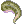
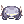
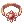
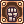
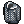

File list
Jump to navigation
Jump to search
This special page shows all uploaded files.
{kind=link}
{kind=link}
| Date | Name | Thumbnail | Size | User | Description | Versions |
|---|---|---|---|---|---|---|
| 15:51, 30 September 2016 | Fortunity - Binocular.png (file) |  |
428 bytes | Akenoyuki | 1 | |
| 18:00, 16 July 2018 | Fatal.png (file) |  |
429 bytes | Colours | 1 | |
| 01:01, 25 September 2018 | Shadow Weapon.png (file) |  |
429 bytes | Colours | 1 | |
| 01:26, 17 September 2015 | Bun.png (file) | 430 bytes | AloeLeaflet | 1 | ||
| 02:02, 18 September 2015 | Petitetail.png (file) |  | 430 bytes | AloeLeaflet | 1 | |
| 13:25, 5 October 2016 | Safety Wall.png (file) |  |
431 bytes | Seandh | 1 | |
| 02:31, 3 October 2016 | Edp.png (file) | 432 bytes | Windrell | 1 | ||
| 08:33, 1 June 2017 | Savage Meat.png (file) |  |
432 bytes | Jack | 1 | |
| 19:48, 14 April 2016 | 5170.png (file) |  | 435 bytes | Mayo | 1 | |
| 12:29, 30 September 2016 | Alloytrap.png (file) |  |
435 bytes | Appleproject | 1 | |
| 20:39, 17 December 2015 | Moutonlife.png (file) |  |
436 bytes | Ariden | 1 | |
| 01:02, 25 September 2018 | Shadow Shoes.png (file) |  |
436 bytes | Colours | 1 | |
| 15:17, 7 January 2016 | Charm-Ice.png (file) | 437 bytes | Pruu | for use in Pruu's Guide to Kagerou/Oboro for PVM | 1 | |
| 14:13, 7 March 2017 | Ganbantein.png (file) |  |
437 bytes | AloeLeaflet | 1 | |
| 14:38, 24 October 2016 | Radius.png (file) |  |
437 bytes | Ggboyz | 1 | |
| 07:49, 16 July 2018 | Rofl.png (file) |  | 437 bytes | Colours | 1 | |
| 22:54, 8 October 2016 | Spell Fist.png (file) |  |
437 bytes | Seandh | 2 | |
| 00:50, 18 September 2015 | Medicinebowl.png (file) |  |
438 bytes | AloeLeaflet | 1 | |
| 01:20, 10 September 2015 | Morrigane's Belt.png (file) | 438 bytes | AloeLeaflet | 1 | ||
| 17:48, 1 October 2016 | Endofhorizon.png (file) |  |
439 bytes | Appleproject | 1 | |
| 03:02, 7 March 2017 | Blessing.png (file) |  |
440 bytes | AloeLeaflet | 1 | |
| 13:24, 5 October 2016 | Killing Cloud.png (file) |  |
440 bytes | Seandh | 1 | |
| 06:27, 1 October 2016 | Fortunity - Bow Thimble.png (file) |  |
441 bytes | Akenoyuki | 1 | |
| 16:29, 17 November 2015 | RG ENDU.png (file) |  |
441 bytes | Halves | Icon for RG Guide. | 1 |
| 23:49, 16 September 2015 | Sbr44.png (file) | 441 bytes | AloeLeaflet | 1 | ||
| 11:08, 24 May 2016 | 2115.png (file) |  |
442 bytes | Mayo | 1 | |
| 15:19, 7 January 2016 | Illusion-Shadow.png (file) |  |
442 bytes | Pruu | for use in Pruu's Guide to Kagerou/Oboro for PVM | 1 |
| 01:30, 9 October 2015 | Anodyne.png (file) |  |
443 bytes | AloeLeaflet | 1 | |
| 13:21, 5 October 2016 | Call Tera.png (file) |  | 443 bytes | Seandh | 1 | |
| 14:18, 7 March 2017 | Land Protector.png (file) |  |
443 bytes | AloeLeaflet | 1 | |
| 13:20, 5 October 2016 | Call Aqua.png (file) | 445 bytes | Seandh | 1 | ||
| 06:29, 1 October 2016 | Fortunity - Physical Enchancer Ring.png (file) |  |
446 bytes | Akenoyuki | 1 | |
| 01:32, 18 September 2015 | Greenherb.png (file) |  |
446 bytes | AloeLeaflet | 1 | |
| 15:21, 7 January 2016 | Makibishi.png (file) |  |
446 bytes | Pruu | for use in Pruu's Guide to Kagerou/Oboro for PVM | 1 |
| 19:48, 14 April 2016 | 5753.png (file) |  |
447 bytes | Mayo | 1 | |
| 13:21, 5 October 2016 | Call Ventus.png (file) |  |
447 bytes | Seandh | 1 | |
| 07:43, 14 October 2016 | Crescent Elbow.png (file) |  |
447 bytes | Ggboyz | 1 | |
| 17:43, 7 May 2018 | First Aid.png (file) | 447 bytes | Ketalar | For oboro guide in progress. | 1 | |
| 14:20, 4 February 2016 | Moracoin.png (file) |  |
447 bytes | Adri | 1 | |
| 00:49, 9 June 2017 | New.png (file) | 447 bytes | Tokeiburu | 1 | ||
| 13:26, 5 October 2016 | Warmer.png (file) |  |
447 bytes | Seandh | 1 | |
| 02:28, 3 October 2016 | Advancedkatar.png (file) |  |
449 bytes | Windrell | 1 | |
| 11:10, 16 October 2016 | Hover.png (file) |  |
449 bytes | RadenWA | 1 | |
| 17:56, 14 April 2016 | 5649.png (file) |  |
450 bytes | Mayo | 1 | |
| 00:15, 27 February 2021 | Descript13.png (file) | 450 bytes | IllegalKross | 1 | ||
| 09:40, 9 September 2016 | Glittering.png (file) |  | 450 bytes | Appleproject | 1 | |
| 17:41, 15 July 2018 | Crimson bible.png (file) |  |
451 bytes | Colours | 1 | |
| 11:11, 16 October 2016 | Infrared Scan.png (file) |  |
451 bytes | RadenWA | 1 | |
| 14:33, 11 January 2016 | Doram01.png (file) |  |
452 bytes | Adri | 1 | |
| 21:35, 26 February 2021 | Descript1.png (file) | 453 bytes | IllegalKross | 1 |
{kind=link}
{kind=link}
{kind=link}
{kind=link}
{kind=link}
{kind=link}
{kind=link}
{kind=link}
{kind=link}